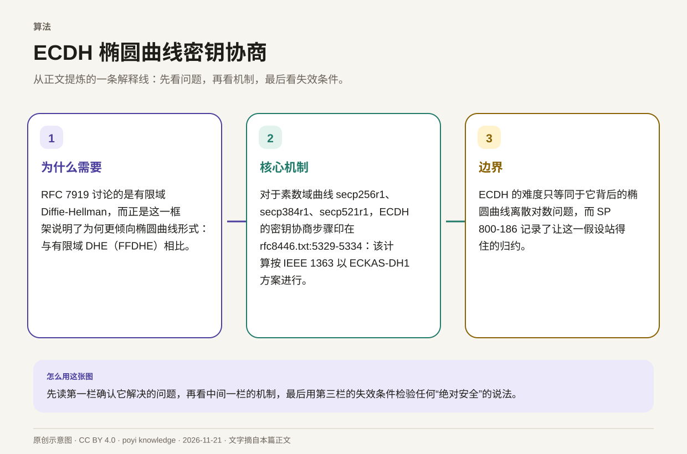
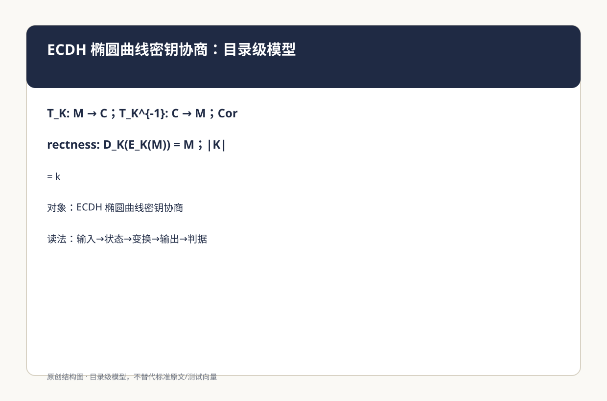

原理与机制
算法：ECDH 椭圆曲线密钥协商（Elliptic Curve Diffie-Hellman）。对于素数域曲线 secp256r1、secp384r1、secp521r1，ECDH 的密钥协商步骤印在 rfc8446.txt:5329-5334：该计算按 IEEE 1363 以 ECKAS-DH1 方案进行，得到的值用原文说就是 「the shared secret is the x-coordinate」（共享秘密是椭圆曲线 ECDH 点的 x 坐标），并以定长八位组串表示、前导零不得截断。整句因换行带缩进而被拆到多个续行，所以只引用 x 坐标这一段、其余按行号转述。关于范围有两点：这是经典的 ECDH 原语（用私有标量乘对端公钥点、取其 x 坐标），而 RFC 8446 把这个 x 坐标当作中间值而非最终密钥——密钥派生是另一条目，故此处不作断言。

为什么重要
RFC 7919 讨论的是有限域 Diffie-Hellman，而正是这一框架说明了为何更倾向椭圆曲线形式：与有限域 DHE（FFDHE）相比，rfc7919.txt:720 对 ECDHE 印着 「a much stronger key exchange mechanism than FFDHE」（比 FFDHE 强得多的密钥交换机制）（在可比的计算代价下）。同一节明确说 RFC 7919 自身不涵盖仅有限域的情形、也不处理 ECDHE（文中称 ECDHE 定义于 RFC 4492）——这句话是在作比较，而不是给 ECDH 下定义。于是标准给出的设计理由是效率：椭圆曲线群能以更低的每安全级代价完成同一种协商。这正是被引文件断言的取舍；它没有声称两种设定之间存在等价性证明。
应用与实例
NIST SP 800-186 把 ECDH 归入椭圆曲线的用途。整句类别陈述印在 sp800-186.txt:335-337：「Elliptic curve cryptography (ECC) has uses in applications involving digital signatures (e.g., Elliptic Curve Digital Signature Algorithm [ECDSA]) and key agreement schemes (e.g., Elliptic Curve Diffie-Hellman [ECDH]).」（椭圆曲线密码用于数字签名（如 ECDSA）与密钥协商方案（如椭圆曲线 Diffie-Hellman 即 ECDH））。该建议还在 sp800-186.txt:357-359 附近说明其规定的密钥对仅用于签名或密钥协商、不应作其他用途。这就是证据支持的部署角色：ECDH 是这套基于离散对数的椭圆曲线家族里的密钥协商成员。同一文档正文左对齐，所以这句以普通单空格接合、可整段引用。

边界与攻击面
ECDH 的难度只等同于它背后的椭圆曲线离散对数问题，而 SP 800-186 记录了让这一假设站得住的归约。在 sp800-186.txt:2184-2198 的曲线选择准则里，第 5 条印着椭圆曲线离散对数问题可被转化为 「an ordinary discrete logarithm problem defined over the finite field GF(qk)」（定义在有限域 GF(qk) 上的普通离散对数问题）（即 MOV 型迁移）；GF(q^k) 的上标与随后的同余号在本抽取中退化，所以嵌入度的条件按行号转述而不引用。正因为这一归约存在，同一准则要求每条曲线都有大嵌入度、小余因子的大素数阶子群、以及非异常曲线的阶。这里没有说的：本留存文件不提量子计算机，所以该条目不把量子破解附加到 ECDH 上——经典边界就是该归约，而标准划出的防线是能抵抗它的曲线选择。
历史与背景
留存文本记录的是 ECDH 何时进入标准，而非谁发明了它。RFC 7568（2015 年 6 月，运行页眉在 rfc7568.txt:60）在列举较新 TLS 版本相对 SSLv3 新增的特性时，于 rfc7568.txt:205 印着 「Elliptic Curve Diffie-Hellman (ECDH)」（椭圆曲线 Diffie-Hellman（ECDH）），紧接着说明 ECDH 与 ECDSA 是在 RFC 4492 中加入——续行带缩进，故只引用 (ECDH) 这一术语、RFC 4492 的归属作转述。RFC 7919（2016 年 8 月）把 ECDHE 当作由 RFC 4492 定义的既有机制，并与自身的有限域范围作比较。这些留存文件都没有给出 ECDH 原语的提出者或首次发表年代，所以该条目只陈述文中确实印出的、可定年的标准化节点，不作无法核实的起源声明。
逐步示例与核验
形式模型与复算步骤
[K=g^{ab}\bmod p\quad\text{或}\quad K=[ab]G]
ECDH 椭圆曲线密钥协商的公开参数、密钥/随机数与消息；变量说明：a,b 私有随机数，g 生成元，p 模数，G 椭圆曲线基点。1.双方各自生成私钥并计算公钥。2.交换公钥。3.用对方公钥与自己的私钥计算共享点。边界：公式只覆盖已登记的参数与假设；参数取值、标准版本和实现细节仍以来源为准。
参考出处
- Wikipedia search entry for ECDH 椭圆曲线密钥协商. https://zh.wikipedia.org/w/index.php?search=ECDH%20%E6%A4%AD%E5%9C%86%E6%9B%B2%E7%BA%BF%E5%AF%86%E9%92%A5%E5%8D%8F%E5%95%86
- Handbook of Applied Cryptography (Menezes, van Oorschot, Vanstone). https://www.cacr.math.uwaterloo.ca/hac/